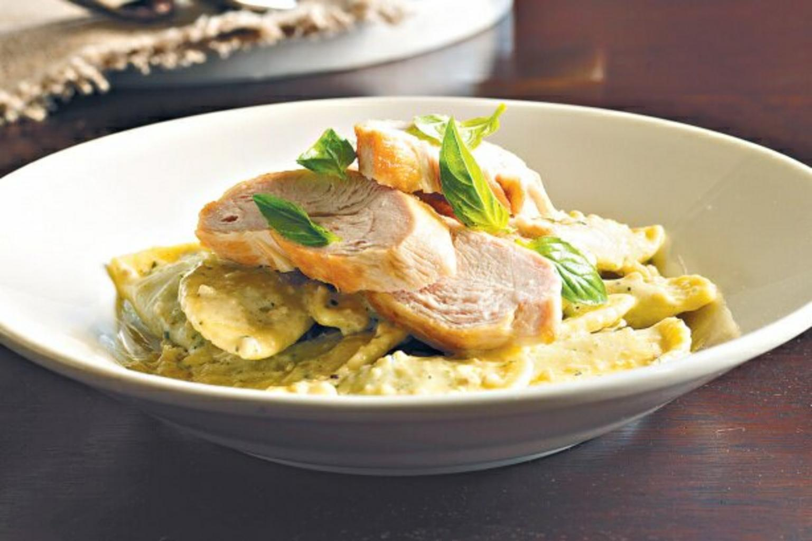

Indulge in a dish that perfectly captures the essence of fresh, vibrant Mediterranean flavors. Our Lemon Chicken Pesto Pasta features tender, golden-seared chicken breast strips nestled in a bed of al dente pasta. The star of the show is our signature house-made pesto—a fragrant blend of fresh basil, toasted pine nuts, and aged Parmesan—elevated by a generous infusion of fresh lemon zest and juice. The citrus cuts through the richness of the olive oil, creating a bright, uplifting sauce that coats every strand of pasta with a zingy, herbaceous finish.
This dish is as nutritious as it is flavorful, offering a high-protein meal that feels light and refreshing. We finish each plate with a sprinkle of cracked black pepper, a handful of baby arugula for a peppery bite, and an extra dusting of shaved Pecorino Romano. Whether you're looking for a sophisticated weeknight dinner or a crowd-pleasing weekend lunch, this pasta brings a burst of sunshine to your table, proving that simple, high-quality ingredients truly make the best meals.